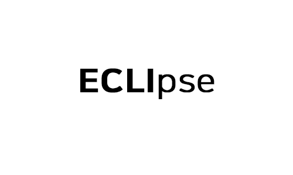

미디어

김도진-박채영 신임 대표 기자 간담회 안내
2020.09.12 THU
주주총회를 거쳐 이클립스CEO로 공식 취임 예정인 김도진,박채영 공동 대표와 기자분들이 만나보실 수 있는 자리를 준비했습니다.
일시 : 2020.10.25 (일) 10:00~12:00

이클립스 AI 미디어 스터디 제 1강 - 번역엔진
2020.09.12 THU
10월 10일을 시작으로 격주로 미디어 대상 AI 스터디를 엽니다. 개발리더들이 최신 AI기술과 경험을 공유하고, 이클립스AI의현황과 비전을 보여줄 예정입니다.
일시 : 2020.10.10 (토) 10:30~11:30
이클립스 AI 미디어 스터디 제 2강 - 대화엔진
2020.09.12 THU
10월 30일 대화엔진 주제로 두번째 AI미디어 스터디를 엽니다.
자연어처리 기술 기반으로 챗봇/스피커봇 등을 만들 수 있는 개발툴 개발을 서비스계획을 공유합니다.
일시 : 2020.10.30 (토) 10:30~11:30
이클립스 AI 미디어 스터디 제 3강 - 추천엔진
2020.09.12 THU
11월 15일 추천 엔진을 주제로 세번째 AI미디어스터디를 엽니다.
추천엔진은 뉴스,브런치,멜론등 서비스에 적용되어 이용자에 맞는 최적의 추천을 제공하고 있습니다.
일시 : 2020.11.15 (일) 10:30~11:30
이클립스 AI 미디어 스터디 제 4강 - 음성엔진
2020.09.12 THU
11월 29일 추천 엔진을 주제로 세번째 AI미디어스터디를 엽니다.
일시 : 2020.11.29 (일) 10:30~11:30
이클립스 AI 미디어 스터디 제 5강 - 시각엔진
2020.09.12 THU
시각엔진은 컴퓨터 비전기술로도 불리며 영상이나 이미지분석 분류검색등 다양한 세부 기술로 구성됩니다.
일시 : 2020.12.13 (일) 10:30~11:30
이클립스 AI 미디어 스터디 제 6강 - 이클립스AI서비스비전
2020.09.12 THU
12월20일 이클립스본사에서 AI서비스비전을 주제로에서 여섯번째 미디어 스터디를 엽니다.
일시 : 2020.12.20 (일) 10:30~11:30
more